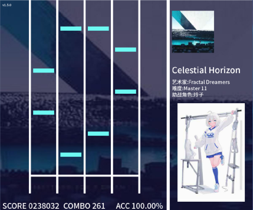

|

|
欢迎回到Jactithm什么是JactithmJactithm是一款全新的社区4K音游，由个人开发者繁星丶凝律开发完成。Jactithm客户端现提供经典的4K定轨玩法，支持玩家进行直/斜轨道切换、判定区间调整等多项个性化设置，并且提供了Malody4K谱面的读取功能。目前，Jactithm仍处于1.x开发测试阶段 官方交流群 813187898 |
Jactithm基于什么编写
Jactithm基于Python 3.x，依存于Pygame库编写而成，包含了自有的谱面文件格式和账户文件形式。
谁制作了Jactithm
Jactithm的全部开发人员和早期供谱社区成员均为全国各地的中学生，这是一个完全由中学生搭建起来的项目。
我应该如何游玩Jactithm
由于Jactithm尚处于1.x测试阶段，目前试玩的唯一途径是加入官方QQ群下载游戏资源和现有的谱面。群号：813187898。